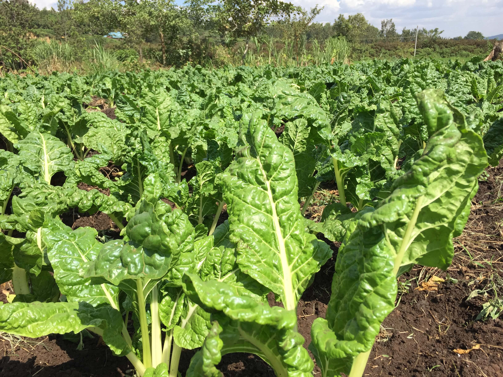
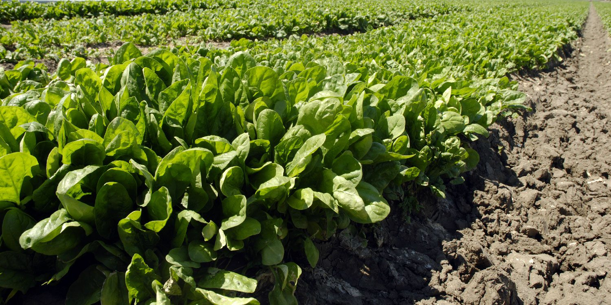

Spinach Production
Usually covers around 1/2- 1 acres of the farm per season.

- Growth Duration: 30-45 days depending on variety.
- Varieties: e mainly plants Local spinach(Sukuma-like).
- Soil Type: Moist,rich loam,pH 6.0-7.0.
- Spacing: 20-30 cm apart.
- Fertilizer: N-rich compost Or CAN
- Watering:Frequent and light
- Yield: 5-10 tons per acre.
Farm Gallery

